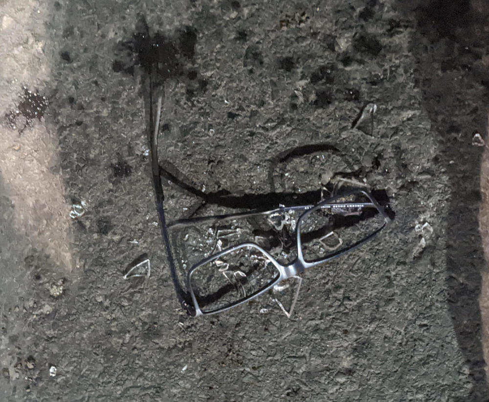
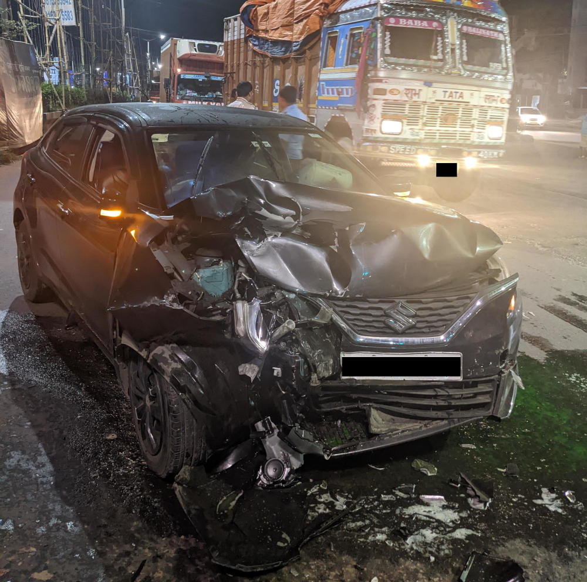
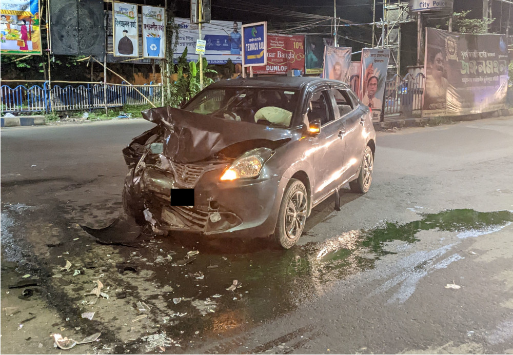
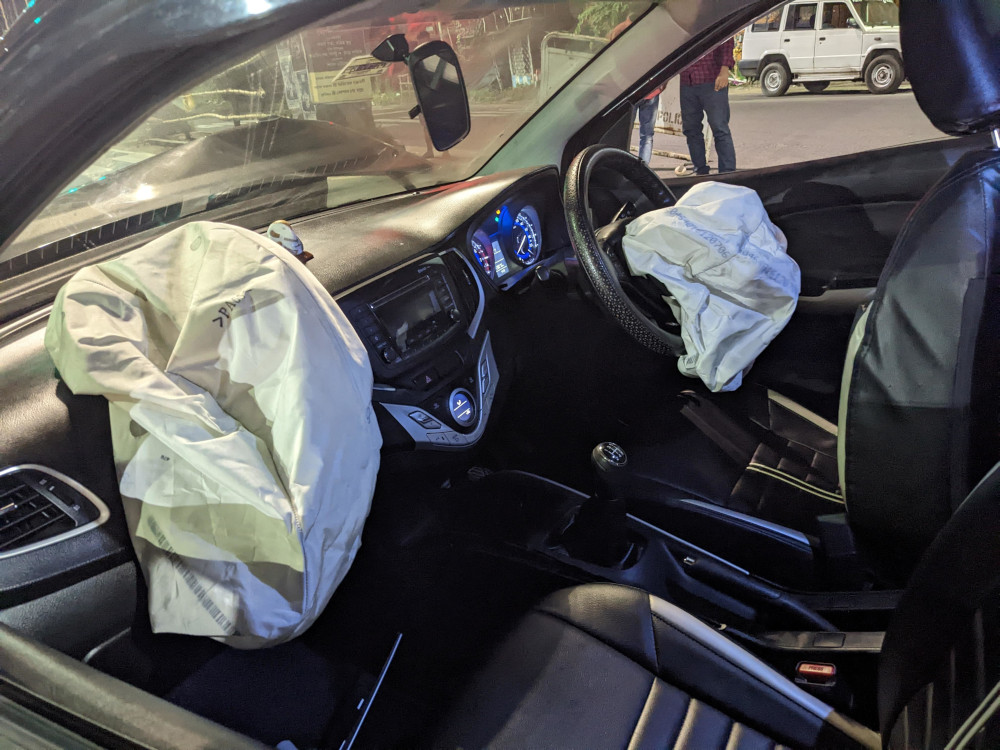
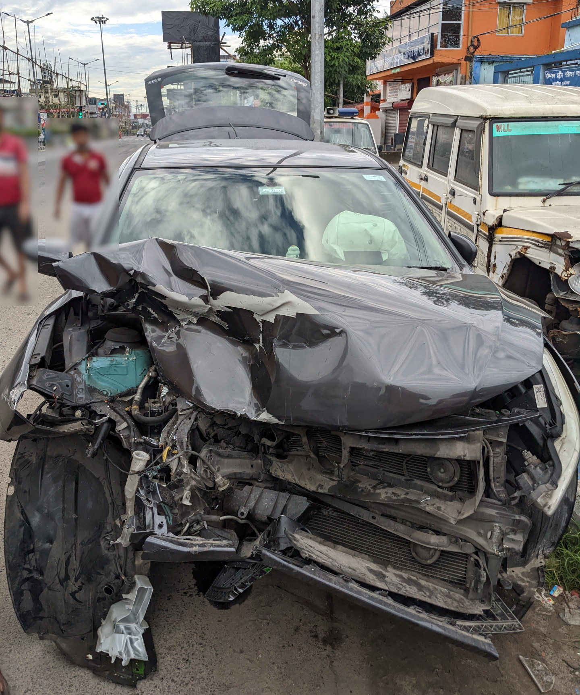

So this took almost a year to pen down. Not because I was super busy or anything, but because I was too lazy.
After durga-pujo in 2022, myself, my brother and my cousin brother found ourselves in our car. We were driving to Purulia in order to hike. Barely 2 kms from the house, we ended up getting hit by a bolero max truck. This was a fantastic collision (mainly because no one died). We were injured. Both the vehicles were seriously damaged.
Here is what happened
It is 4:30am in the morning and me, my brother and my cousin have just started this trip. I am driving the car. I have driven this stretch of road multiple time. I know that a particularly sketchy traffic intersection is coming up. We are halfway through the intersection.
Here is the next 5 seconds (maybe less):
- I see a truck.
- I see smoke; I taste smoke; my face hurts.
- I feel an impact; I hear a LOUD thud.
- I realise that something bad has happened; my ears are ringing.
- I look to my left. My brother is there. He is not bleeding. He is semi-conscious.
- My cousin is on the dashboard; upside down. He is not bleeding; he is semi-conscious.
- My brother walks out of the car and tries to intercept the truck that hit us.
- I walk out, and choose to inspect the car instead.
- I realise what has happened and I am relieved that all of us are OK.
- There is police nearby, they stop the truck and check on the occupants of the truck.
- By this time the cousin has walked out of the car. The three of us assemble collectively and look at the car.
The car ?
The car is damaged. The entire engine compartment is bashed inside. the front radiator, the engine-block, the transmission are smashed. There is green coolant on the road. The car does not start.
The A-pillar of the car is undamaged. The passenger compartment is undamaged. The driver's seat is twisted slightly.
Airbags have been deployed.
How are the occupants doing ?
My cousin took the largest hit because he was flung form the rear seat onto the dashboard. He hurt his head and his right-shin. Apart from that, he also hurt this back and torso in multiple places.
My brother was on the passenger seat next to the drivers seat. He was saved by the airbag. He took some hit on his face and neck.
I was hurt a little bit more than the others. My right foot was hurt because the accelerator got pinned and jammed as the engine was pushed into the passenger compartment.
Since the truck hit us on the right-hand corner of the car, this side took significant impact. My face was slammed with the airbags. This smashed my glasses against my face. My eyes hurt for about 2 days after the accident. I have no recollection of the airbag hitting my face. All I remember is that my face hurt all over and there was a slight burn on my nose for a couple days. I think that was due to the explosive in the airbags.
My shoulder and abdomen had serious seat-belt related injuries. Both of my arms were injured as they were on the steering when this happened.
My neck was injured because of the whiplash.
Fortunately, none of the injuries were serious enough to need emergency medical attention. The doctors at the hospital cleared us with basic first aid and some x-rays to rule our severe problems with the skeletal system.
I was referred to a spine specialist because of the whiplash and an ophthalmologist for my eyes. There was a chance that the neck would put an end to my motorcycling for months if not more. However after some more x-rays at the spine specialist, I was cleared for any neck/spine related injuries. However, I could not move my neck for about 1 week after the event.
At the ophthalmologist, they wanted to rule out retinal detachment because of the accident. I had some retina examinations done, which resulted in some rather fancy colour photographs of my retina. Everything was OK and retinal detachment was ruled out.
The photos
The Glasses. I have kept the smashed frame as a memoir.

The lens was made of plastic; and not real glass. We can see then lying under the glass.
The car from the left side. This was the side where the truck impacted us.

The car from the right side. We can see that the car has been pushed to the middle of the road from the right most lane. There is coolant on the street.

The passenger compartment of the car. Notice that the A-pillar and the windshield are all intact. Pretty remarkable. You can also see that the driver seat is twisted. Mt theory is that the seat twisted on impact as it used my body and the seatbelt as a pivot. No wonder I had seatbelt burns!!!

This is the car. That day after being towed and cleaned up at the nearby police station. Pretty gnarly.

What now ?
This was quite a jarring experience. The three of us agreed that if our car was little bit faster, then the truck would have hit the drivers side of the car; without the protection of the airbags; i.e. right through the driver's door. That would be a fun experience. Definitely some serious T-boning action. Possibly death.
If the car were a little bit slower, then we would have gone under the truck significantly and our A-pillars would have taken some damage.
I have a LOT of respect for airbags and seat-belts now. It is one thing to know that these things save lives and it is quite something else to live through that experience.
My opinion that personal vehicles (especially cars) should be phased out in favour of robust public transport has solidified even more.
I get to say that I have paid for and used the airbags of a car. :)